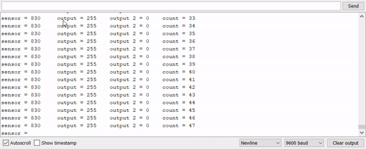
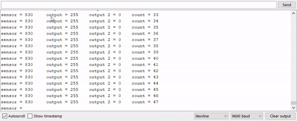

A3 - Input & Output
Demo
Here are gifs of my LEDs fading when I'm interacting with the photocell resistor and of the Serial Monitor
 

Design Requirements
- You must use a sensor that changes its resistance givens some change in the physical world.
- Your schematic, code, and circuit must correspond to each other! If they don't match, we may deduct points for the part that doesn't correspond to the others.
- You explain what values you might read at the voltage divider. You should calculate an appropriate resistance to use. Show your calculation.
- Your Arduino code should use analogWrite(), analogRead() and an if-statement. Within your code, for each line of code with content (i.e. not lines of code which are only white space, a curly brace, etc), add a short comment (// like this) above the line of code explaining what the line does.
Schematic and Calculations
Here is a schematic of my circuit (left) and my calculations (right). I chose to fade the two green LEDs inversely when interacting with the photocell resistor. Both green LEDs have a 220 ohm resistor. I chose these values after calculating the recommended resistance for a 20mA current through the different LEDS considering their voltage drop with a 5V voltage.
For the voltage divider, I calculated the expected resistance of the photocell using the graph from the lecture slides. Since the photocell resistor is variable, I used a 10k ohm resistor to make sure I don't short circuit the arduino board.


Circuit
Code Snippet
/*
Adapted from AnalogInOutSerial example code in the Arduino editor.
The circuit:
- Voltage divider: two resistors - one 10k ohm resistor in series with a photocell resistor, connected to Analog Pin 0.
- Green LED connected from digital pin 9 to ground
- Green LED connected from digital pin 11 to ground
*/
// Unchanging variables
const int analogInPin = A0; // Analog input pin that the voltage divider is attached to
const int analogOutPin = 11; // Analog output pin that a Green LED is attached to
const int analogOutPin2 = 9; // Analog output pin that a Green LED is attached to
int val = 0; // value read from analog input
int outputValue = 0; // value output to the green LED
int outputValue2 = 0; // value output to the green LED
int count = 0; // counter variable that will switch the LEDs
void setup() {
// initialize serial communications at 9600 bps:
Serial.begin(9600);
}
void loop() {
// read the analog in value:
val = analogRead(analogInPin);
// constrain the sensorValues to the range I tested with the photocell resistor
int sensorValue = constrain(val, 480, 830);
// map a direct correlation to the range of the LED brightness
outputValue = map(sensorValue, 480, 830, 0, 255);
// map an inverse correlation to the range of the LED brightness
outputValue2 = map(sensorValue, 480, 830, 255, 0);
// If statement to swap the fading pattern of the green LEDs, changing every 10 seconds
if (count < 200) {
analogWrite(analogOutPin, outputValue);
analogWrite(analogOutPin2, outputValue2);
count++;
} else if (count < 400) {
analogWrite(analogOutPin, outputValue2);
analogWrite(analogOutPin2, outputValue);
count++;
} else {
count = 0;
}
// print the sensor value, both output values, and the counter to the Serial Monitor.
Serial.print("sensor = ");
Serial.print(sensorValue);
Serial.print("\t output = ");
Serial.print(outputValue);
Serial.print("\t output 2 = ");
Serial.print(outputValue2);
Serial.print("\t count = ");
Serial.println(count);
// wait 2 milliseconds before the next loop for the analog-to-digital
// converter to settle after the last reading:
delay(2);
}